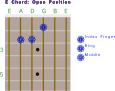

Some thoughts on learning to play the guitar
Back to Home PageIntroduction
I learned to play the guitar over many years, starting in college.I've never taken any formal lessons and am a mediocre player, but along the way I've learned some things that I think will be useful to note.
First off, learning how to play the guitar can be somewhat frustrating and difficult. The position of the hand and fingers on the fretboard being the most difficult to begin with.
It actually hurts in the beginning, but soon your hands will become accustomed to pressing strings and holding chord shapes. Trust me, just keep going.
So, that's just something that needs some practice and very soon, you will start feeling more comfortable in being able to hold down the strings in a way that won't buzz and produces good sound.
When starting out, there are a few things that everyone must learn:
Once you get past these four steps, now it's time to dive into playing!
Now, many people get frustrated with the next sequence of steps. And there are many many
ways to proceed to learn to play.
The most important thing is that you don't get frustrated and end up not playing at all.
So, in my mind, being able to play along with some of your favorite songs, is the best
way to keep wanting to play, and most importantly, have fun while you're learning!!
Now, the following sequence is highly debatable which place to start. But with the aforementioned
goal of keeping it fun, I think it makes sense to learn just a couple of chord shapes first,
which you can then leverage to roughly play along with hundreds of songs!!
Sounds great, right?
Well, like I said, many people might not teach this way, but as I mentioned I think it
makes for a more enjoyable experience.
There's actually 4 things I want you to learn - Open E, Open A and then the corresponding
E and A Barre Chords.
This is an E chord. You probably already know it! Step one is done.

So, to make a long story short, I think learning the 2 basic Barre chords is the best bang for your buck
when starting out. The reason why is that even though these chord shapes are somewhat difficult
for beginners to learn, pretty much every chord shape is difficult at first, so that's not
much of a stretch. The second reason, is that with just these 2 chord shapes, you'll be able
to play along with tons of songs right away.
Now, you won't be able to play the more intricate parts of songs, but that's totally ok.
So, the 2 chord shapes are the E shape and the A shape. If you already know these chords in
the open position, think of these shapes as the exact same chords, but shifted up the fretboard.
And when you shift chords up the fretboard, you're essentially playing more chords.
So shifting the E chord up to the 3rd fret, you now are playing a G chord. But you can't just
take the same shape you made in the open position and play it on the 3rd fret because in the open
position, the Nut is actually doing some work for you. So, that's what a Barre chord is, is you're
using your index finger to replace the nut, as you move up the fretboard.
Now, you're able to play E (open position), F (index finger on 1st fret), G (index on 3rd fret)
A (5th fret), B (7th fret), C (8th fret) and D (10th fret)!! Pretty cool, huh?
So that's the first chord shape to learn, is the E chord but moving up and down the fretboard.
The E shape by the way, starts and utilizes the 6th string as it's root. This means for an E chord
or E shaped Barre chord, you can strum all 6 strings and not worry about your strumming hand too much.
The next shape (and final for this lesson), is the A shape. If you learn the A chord in the open
position, then you can learn the Barre chord for this shape and once again, just by shifting
that position up and down the fretboard, have access to many chords.
So, the difference here, is that this shape has it's root on the 5th string, and doesn't include
the 6th string, so you only strum an A chord on the first 5 strings.
So when you're playing the A shaped Barre chord, don't strum the lowest (6th) string.
Now, as you move up from the open position into the Barre shape, you can now play
B (index finger on 2nd fret), C (3rd fret), D (5th fret), E (7th fret), F(8th fret) and
G (10th fret).
Note, the 12th fret everything starts repeating from the open position notes. Which is to say,
if you strum your guitar without fretting any notes whatsoever and then fret all strings on
the 12th fret, it should sound similar, just an octave higher.
So, a little more on chords. Chords are basically
composed of 3 notes, and when played together, sound good. Many times on the guitar, we'll
be playing 'chords' but in reality a few of the 3 base notes are repeated across the 6 strings.
For example, the 1st and 6th strings are tuned to E so if you play those two string together on
the same fret (or in the open position for an E chord), you are playing duplicate E notes, but
it's still an E chord.
So, that's fine. But just know that as you progress, you'll learn more about how to find
these 'triads' in many different areas up and down the fretboard which opens up many opportunities
to layer in sounds and notes.
Now, there's 7 notes in the western music - A through G. And if you put a major chord together,
the three notes you'll be playing are the 1, 3 and 5 notes.
So if you're playing an A chord, the notes that make up that chord are A (1), C (3), and E (5).
Starting from A as the 1 and counting up to 3 is the C and 5 is the D.
- How to tune your guitar
- How to hold the guitar in your lap
- How to place your hand to form chord shapes
- How to strum the guitar
Once you get past these four steps, now it's time to dive into playing!